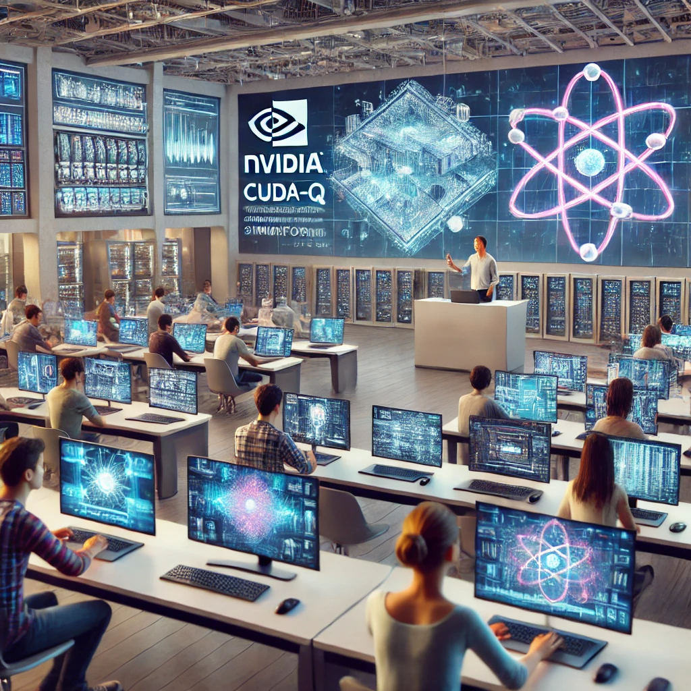
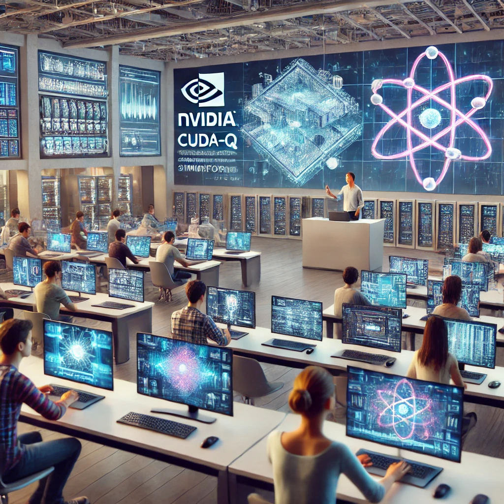

Influência NVIDIA
A NVIDIA, além de desenvolver ferramentas e
plataformas para a computação quântica, exerce uma influência
significativa no ecossistema global de pesquisa e
desenvolvimento nessa área. Essa influência se manifesta de
diversas formas, incluindo:
Parcerias com Universidades e Laboratórios
• Colaborações em pesquisa:
A NVIDIA estabelece parcerias com universidades e laboratórios
de pesquisa de ponta para explorar novas fronteiras da
computação quântica. Essas colaborações permitem que
pesquisadores acadêmicos acessem recursos computacionais
avançados e experimentem as últimas tecnologias da NVIDIA.
• Desenvolvimento conjunto de hardware e software:
Através dessas parcerias, a NVIDIA colabora no desenvolvimento
de hardware quântico e software, acelerando o progresso em ambas
as áreas.
• Formação de talentos: A NVIDIA oferece
programas de treinamento e capacitação para estudantes e
pesquisadores, contribuindo para a formação de uma nova geração
de especialistas em computação quântica.
Impacto na Indústria
• Disponibilização de ferramentas e plataformas:
A plataforma CUDA Quantum da NVIDIA democratiza o acesso à
computação quântica, permitindo que empresas de diversos setores
explorem as possibilidades dessa tecnologia.
• Aceleração da pesquisa industrial:
Empresas de diversos setores, como farmacêutico, financeiro e de
materiais, utilizam as ferramentas da NVIDIA para acelerar suas
pesquisas e desenvolver novos produtos e serviços.
• Criação de um ecossistema vibrante:
A NVIDIA contribui para a criação de um ecossistema vibrante em
torno da computação quântica, incentivando a inovação e a
colaboração entre empresas, universidades e laboratórios.
Benefícios para a Comunidade Científica
• Aceleração do progresso: As ferramentas e
plataformas da NVIDIA permitem que os pesquisadores realizem
simulações e experimentos mais complexos e em maior escala,
acelerando o progresso na área.
• Compartilhamento de conhecimento:
A NVIDIA promove a troca de conhecimento e a colaboração entre
pesquisadores de diferentes instituições, através de
conferências, workshops e publicações.
• Acesso a recursos computacionais:
A disponibilidade de recursos computacionais avançados da NVIDIA
permite que os pesquisadores se concentrem em questões
científicas mais complexas, sem se preocupar com os aspectos
técnicos da computação.
Em resumo:
A
influência da NVIDIA na comunidade de computação quântica é
multifacetada. A empresa não apenas fornece as ferramentas e
plataformas necessárias para o desenvolvimento de software
quântico, mas também investe em parcerias com universidades e
laboratórios, contribuindo para a formação de talentos e a
aceleração da pesquisa. Essa abordagem abrangente tem como
objetivo democratizar o acesso à computação quântica e acelerar
a sua aplicação em diversas áreas.

 
